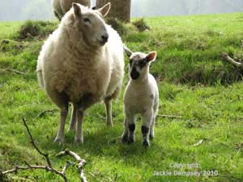

The Austrian Alps
- The Austrian Alps offer the hill walker thousands of kilometres of marked trails through varied and amazing mountain scenery, from lush fern-filled forests of the lower slopes to rugged, craggy high-altitude ridge walks.
- The Alps are a walker’s paradise, with options for all fitness levels: gentle valley walks, forest trails, high-level ridge walks, and challenging mountain climbs. Expect snow-capped peaks, alpine meadows filled with wildflowers, and crystal-clear mountain lakes.
- There is also summer skiing on glaciers. The Stubai and Hintertux glaciers are open for winter sports all year, even in the middle of a hot summer.
- You cannot walk far in the Alps without encountering mountain restaurants offering delicious food, especially apple strudel. This often makes it less important to carry food and drink, lightening your rucksack.
- Wildlife is plentiful: ibex, deer, and the crowd favourite, marmots. Alpine flowers peak in June when the meadows are alive with colour and butterflies.

